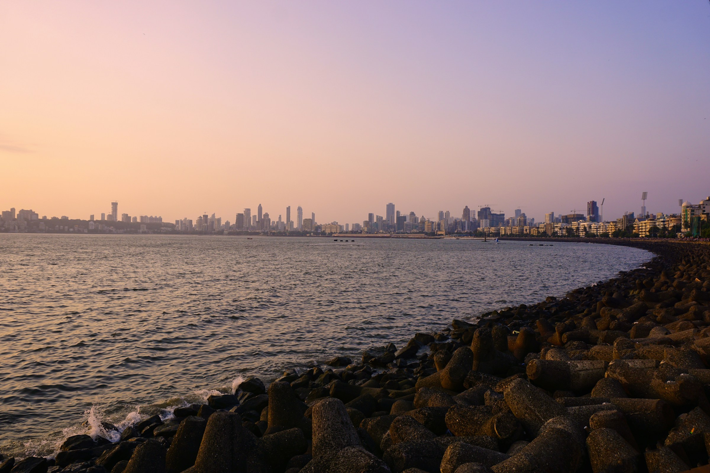
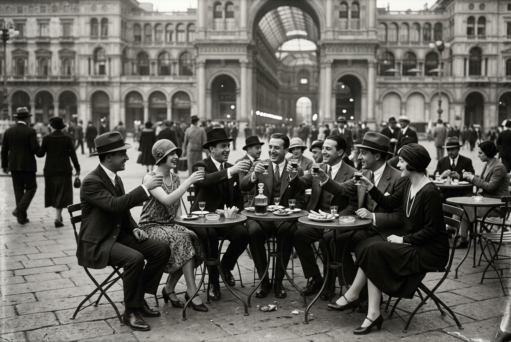

APEROL.
The Golden Hour.
A speculative entry campaign for Aperol into the largest aperitivo opportunity in the world that nobody is fighting for.
A market nobody is fighting for.
India's aperitif category is <1% of spirits sales. APAC aperitivo growth runs at 6.2% CAGR, the fastest in the world. India barely participates. Campari already distributes Aperol Spritz across seven Indian states — yet runs no consumer marketing in the country. The infrastructure exists. The occasion doesn't.
What's true
- India spirits market projected to hit $64B by 2028, world's largest by volume.
- Premium spirits growing >20% CAGR vs. 7% category average.
- 600M+ Indians under 35. Gen Z & women's drinking opening fast in metros.
- Italian brands having a cultural moment (Prada Mumbai, Italian-trained chefs in Bandra).
What's missing
- An occasion. Indians have chai (morning) and dinner (night). The 6–9 PM window is dead space.
- A ritual. No brand has tried to claim the aperitivo hour for India.
- Brand-led entry. Campari India is distribution-led, not culture-led.
- A word for the hour Indians already love but never named.
Between the two, there is a window
we have never named.
Don't Indianize the brand.
Let India inherit the ritual.
Most foreign brand entries into India translate themselves — masala palettes, "Sunny" in the ad. The Reframer cohort (urban 25–34, design-aware) smells this from a mile away. Aperol's move is the opposite: stay Italian, become Indian by being adopted, not adapted. The brand stays Aperol. The hour belongs to India.
The Golden Hour.
Between the day and the night,
there is an hour with no name.
The light turns gold.
The work is done.
Dinner is still coming.
Italy has worshipped this hour
for a hundred years.
India,
the hour is yours now.
Pour. Sit. Look out.
Aperol. The Golden Hour.
Look at the light.
It's the same colour we put in the bottle.
Mumbai. Bangalore. Delhi. Goa. Eleven hero key visuals across four cities, generated via Google AI Studio under hand direction and supplemented with editorial stock photography. Each frame holds Aperol orange — the drink, the sky, the building, the sari — without ever showing a product logo.




60 seconds.
Four cities. One colour.
A wordless tour of golden hour across Mumbai, Bangalore, Delhi, and Goa. Voice-over names the hour into existence. Music: a single sustained string note at 0:25, joined by a bansuri in the final 10 seconds. Every frame holds the orange.
Four rooftops.
Open only between 6 and 9.
The hero activation. Four pop-up Terraces — Mumbai, Delhi, Bangalore, Goa — each pairing one Italian and one Indian chef. Open only 6 PM to 9 PM. Reservations open daily at sunset. €30 per cover, two drinks included. Eight weeks per city. 4,000+ tagged Instagram posts projected. The activation doubles as a content engine and pays for itself.
€4.4 million.
Year one.
A credible Y1 investment for a brand attempting cultural ownership of a category in a tier-1 metro market. Concentrated, not sprinkled. Heavy on experiential and creator partnerships. Light on production — because AI-native content collapses that line by ~85%.
| Channel | % | Spend |
|---|---|---|
| Paid social (Instagram, YouTube) | 30% | €1.32M |
| OOH (4-city, sunset-timed) | 22% | €970K |
| Experiential (Terraces) | 20% | €880K |
| Creator partnerships | 12% | €530K |
| Editorial & PR | 8% | €350K |
| Trade activation | 5% | €220K |
| Production & content | 3% | €130K |
| Year 1 total | 100% | €4.4M |
We measure culture
before we measure cases.
The KPI in Year 1 is not bottles. It's whether "Golden Hour" enters target conversation as an unprompted phrase. Volume follows ritual. Always.
Six weeks.
One person. €0 in tools.
The campaign was produced solo using Google AI Studio for imagery, Kling AI for video, hand-coded HTML for the microsite, and Claude for strategy collaboration. Total monthly tooling cost: €0. The same campaign through traditional production would have spent €130K in content costs alone.
Strategy lockdown
Twelve-page strategic memo. Real market data (Growth Market Reports, Gourmet Pro, Campari Group 9M 2025 results). Target audience locked: the Urban Indian Reframer, 25–34, female-skewed 55/45.
Creative platform
Manifesto, brand line, hero film script with beat-by-beat visuals, three 15-second cutdown scripts, OOH copy for eight sites, social caption bank, activation deck.
Visuals & film
Seventeen hero key visuals through Google AI Studio (Imagen 4 / Nano Banana). Eleven hero film beats through Kling AI. Edited in CapCut. Voiceover recorded on iPhone Voice Memos.
Social & activation
30-day organic calendar. Sunset Report daily content engine. Creator brief for 10 hand-picked partners. Golden Hour Terraces concept with chef pairings, menus, programming, and budget.
Microsite & media plan
Hand-coded HTML microsite with live sunset countdowns across all four cities. €4.4M Year 1 media plan with channel-by-channel rationale, regulatory navigation, and phasing.
Case study & outreach
This page. A 25-slide PowerPoint case study. A 12-page strategic memo as a downloadable Word document. LinkedIn launch carousel in English and Italian. Outreach drafted to Shivam Misra (MD, Campari India) and the Global CMO in Milan.
All trademarks belong to their respective owners. © Sai Kanagat, 2026.